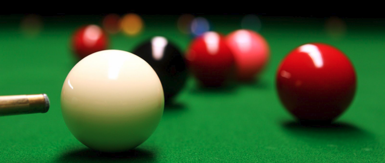

About BCSC

Balsall Common Snooker Club is located at the rear of Balsall Common Village Hall on Station Road. The Snooker Club Room has been in existence since the early 1920's.
The facility boasts 2 of the finest quality snooker tables in the district and excellent bar facilities. The club has approximately 80 members and is open to members and their guests 7 days a week.
Members

Information that members might want.
Club Rules PDF
Joining

Membership to the club is by application. Prospective members must be nominated
by an exisiting memeber and must visit the club at least four times as a guest before
submitting a membership form. For those that are new to the area, please contact the
membership secretary at info@balsallcommonsnooker.co.uk .
Membership form PDF
Annual membership fees:
- Full Member £50 p.a.
- Junior (14-17) £25 p.a.
Contact

Current Committee Members:
- Tim Perry-Ogden (Chairperson)
- John Sutcliffe (Treasurer)
- Marc Cockerton (Membership Secretary)
- Steve Bayliss
- Ashley Jones
- Tony Wheeler
The club committee can be contacted at info@balsallcommonsnooker.co.uk or on twitter and facebook.